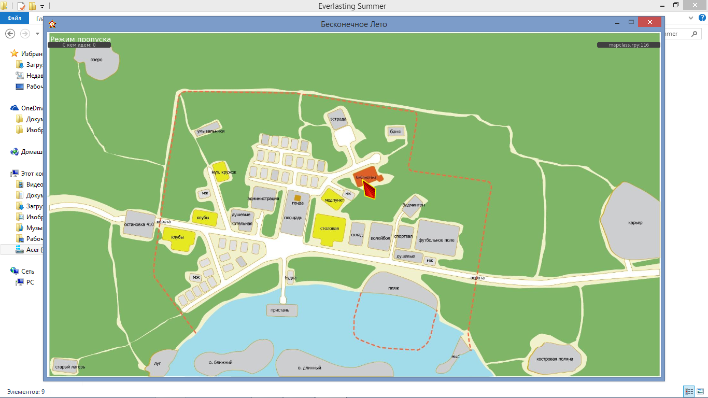
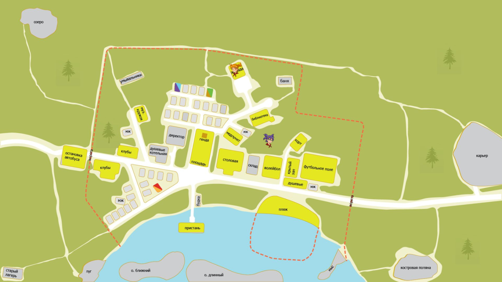

Приветствую.
Сей тред посвящается новой карте, которая сейчас есть в 7ДЛ. Она является плодом коллективных поисков, и некоторые этапы оных представляют как историческую, так и практическую ценность. Сюда перенесены некоторые посты темы "7дл-картооснова, разработка" старого форума. Делается сие для осознания и понимания принципов работы, а заодно некоторых нюансов внутренней кухни БЛ.
Тема оказалась ценна демонстрацией перспективных наработок (секретные зоны, игрища с чибиками, "куклы", "места"), которые могут пригодиться в БЛ-модостроении вообще. Оные сохранённые - во втором сообщении.
Ravsii написал(а):http://rghost.net/6FHN6CQDC
"rpaextractor -x bkrr.rpa -o extractFolder"Чёт вы меня заинтересовали своей картой, сейчас попробую поколдовать.
UPD 1
Нашёл какую-то странную функцию, которая по идее инициализирует саму карту. (mapclass.rpyc) Но странность её в том, что она нигде не применяется. Вообще нигде.Код:def init_map_zones_realization(zones,default): global global_zones global_zones=zones for i,data in global_zones.iteritems(): data["chibi"] = None data["label"] = default data["avaliable"] = True data["been_here"] = 0Свернутый текст
UPD 2
В общем, поколупавшись вечер, едиственное что я понял, что нужно как-то переприсвоить локации(Думаю тут и без меня это додумали.), однако пока не выходит. Не могу найти где они задаются изначально.Кстати, может кому поможет. Раскомпиленный насколько это возможно.
mapclass.rpyсКод:€?}q?(U?versionq?JøVL U?keyq?U?unlockedq?u]q?(crenpy.ast Init q?)q?N}q?(U?nameq X& c:\Eroge_new\game/control/mapclass.rpyq J¶mµRK?‡q?U?nextq?NU?priorityq JÎÿÿÿU linenumberq?K?U?filenameq?X? control/mapclass.rpyq?U?blockq?]q?crenpy.ast Python q?)q?N}q?(U?codeq?crenpy.ast PyCode q?)q?(K?XŒ? global_map_result="error" def init_map_zones_realization(zones,default): global global_zones global_zones=zones for i,data in global_zones.iteritems(): data["chibi"] = None data["label"] = default data["avaliable"] = True data["been_here"] = 0 class Map(renpy.Displayable): def __init__(self,pics,chibi,default): renpy.Displayable.__init__(self) self.pics=pics self.chibi=chibi self.default = default config.overlay_functions.append(self.overlay) def disable_all_zones(self): global global_zones for name,data in global_zones.iteritems(): data["label"] = self.default data["avaliable"] = False data["been_here"] = 0 def enable_all_zones(self): global global_zones for name,data in global_zones.iteritems(): data["label"] = self.default data["avaliable"] = True data["been_here"] = 0 def set_zone(self,name,label): global global_zones global_zones[name]["label"] = label global_zones[name]["avaliable"] = True def reset_zone(self,name): global global_zones global_zones[name]["label"] = self.default global_zones[name]["avaliable"] = False global_zones[name]["been_here"] = 0 def enable_empty_zone(self,name): global global_zones self.set_zone(name,self.default) global_zones[name]["avaliable"] = True def reset_current_zone(self): self.enable_empty_zone(global_map_result) def disable_current_zone(self): global global_zones global_zones[global_map_result]["avaliable"] = False def been_there(self): global global_zones return global_zones[global_map_result]["been_here"] def set_chibi(self,name,ch): global global_zones if ch in self.chibi: global_zones[name]["chibi"] = self.chibi[ch] else: global_zones[name]["chibi"] = None def reset_chibi(self,name): self.set_chibi(name,"") def event(self, ev, x, y, st): return def render(self, width, height, st, at): return renpy.Render(1, 1) def zoneclick(self,name): global global_zones global global_map_result store.map_enabled=False renpy.scene('mapoverlay') global_zones[name]["been_here"] += 1 global_map_result = name renpy.scene() if not not_in_rollback_or_fast_forward(): renpy.log("renpy.roll_forward_info()") renpy.config.skipping = False renpy.game.after_rollback = False ui.jumps(global_zones[name]["label"])() def overlay(self): if store.map_enabled: global global_zones renpy.scene('mapoverlay') ui.layer('mapoverlay') for name,data in global_zones.iteritems(): if data["avaliable"]: pos = data["position"] ui.imagebutton( im.Crop(self.pics["avaliable"],pos[0],pos[1],pos[2]-pos[0],pos[3]-pos[1]), im.Crop(self.pics["selected"], pos[0],pos[1],pos[2]-pos[0],pos[3]-pos[1]), clicked = renpy.curry(self.zoneclick)(name), xpos = pos[0], ypos = pos[1] ) if data["chibi"] != None: ui.imagebutton( anim.Blink(data["chibi"]), anim.Blink(data["chibi"]), clicked = renpy.curry(self.zoneclick)(name), xpos = pos[0], ypos = pos[1] ) ui.close() store.map = Map(store.map_pics, store.map_chibi, default) Часть ниже с другого декомпилятора _show_map widget map store.map_enabled = True ui.interact() _show_map nothing_here random = renpy.random.choice([ u"Тут ничего нет", u"Мне нечего тут делать", u"Пойду-ка я лучше еще куда-нибудь" ]) %(random)s _show_mapКарта, оказывается, сделана не хотмапом как я изначально думал. Это статическая картинка(Серая), которая получает активированные области и поверх них накладывает кнопки, которые вырезает из версии avaliable. Ну и меняет на selected при ховере
Да, так и есть. При помощи добытого вами rpa-extractor'a удалось выяснить, что в archive.rpa скрыты папки с музыкой и графикой. Карты, задействованные в оригинальном БЛ, лежат в archive.rpa по адресу images\1080\maps. Те, что задействованы в БЛ, имеют расширение .png (ещё одна вариация имеет расширение .jpg и представляют собою более старую версию, но что-то я их в игре не встречал. По-видимому, они задействуются при активации каких-то фильтров или чего-то подобного, ну да не суть важно).
Из объяснений, прозвучавших в этой теме, складывается следующая картина:
Есть так называемая базовая картинка (или "подложка", назовём её так), та самая "серая". В оригинальном БЛ это archive.rpa\images\1080\maps\map.png,
в оригинале мода 7дл - scenario_alt\Pics\gui\maps\map_bg.jpg,
из 7дл-картоосновы - scenario_alt\Pics\gui\maps\7dl\7dl_bg.jpg.
Большей частью на протяжении игры видна как раз она. Как только игроку предлагаются на выбор локации для дальнейших действий, задействуется avaliable, "жёлтая". В оригинале БЛ это archive.rpa\images\1080\maps\map_avaliable.png,
в оригинале мода 7дл - scenario_alt\Pics\gui\maps\map_avaliable.jpg,
из 7дл-картоосновы - scenario_alt\Pics\gui\maps\7dl\7dl_avaliable.jpg.
И как только игрок делает выбор, то задействуется третья часть карты, selected, "красная". В оригинале БЛ это archive.rpa\images\1080\maps\map_selected.png,
в оригинале мода 7дл - scenario_alt\Pics\gui\maps\map_selected.jpg,
из 7дл-картоосновы - scenario_alt\Pics\gui\maps\7dl\7dl_selected.jpg.
"Кнопки" локаций задаются координатами, верхней левой и нижней правой для каждой из локаций. Координаты действуют для всех трёх составных частей карты. Эти координаты в БЛ где-то прописаны, но вот где именно?Декомпилированный mapclass.rpyc сохранил на всякий случай. А вот что, интересно, содержит в себе файл, лежащий по адресу game\control\keymap.rpyc ? (Notepad++ выдаёт при открытии нечто жуткое, как, впрочем, происходит и со всеми файлами .rpyc, не прошедшими декомпиляцию.) Имеется предположение, что там как раз и могут лежать координаты оригинальных БЛ-локаций.
openplace написал(а):чувство, сравнимое по степени переживания разве что со вчерашним датфилом
результаты декомпиляции при помощи unrpyc
делалось так:Код:C:\Documents and Settings\Администратор>unrpyc.py --clobber "mapclass.rpyc" C:\Documents and Settings\Администратор>unrpyc.py --clobber "keymap.rpyc" C:\Documents and Settings\Администратор>unrpyc.py --clobber "script_version.rpyc" C:\Documents and Settings\Администратор>unrpyc.py --clobber "russian.rpyc"собственно результаты:
mapclass.rpy - поведение карты
keymap.rpy - здесь прописано управление игрой при помощи джойстика и клавиатуры (кнопки и т.п.)
script_version.rpy - версия используемого скрипта
russian.rpy - здесь прописано, как называются и как действуют те или иные пункты меню в БЛ 1.1mapclass.rpyКод:# Decompiled by unrpyc: https://github.com/CensoredUsername/unrpyc init -50 python: global_map_result="error" def init_map_zones_realization(zones,default): global global_zones global_zones=zones for i,data in global_zones.iteritems(): data["chibi"] = None data["label"] = default data["avaliable"] = True data["been_here"] = 0 class Map(renpy.Displayable): def __init__(self,pics,chibi,default): renpy.Displayable.__init__(self) self.pics=pics self.chibi=chibi self.default = default config.overlay_functions.append(self.overlay) def disable_all_zones(self): global global_zones for name,data in global_zones.iteritems(): data["label"] = self.default data["avaliable"] = False data["been_here"] = 0 def enable_all_zones(self): global global_zones for name,data in global_zones.iteritems(): data["label"] = self.default data["avaliable"] = True data["been_here"] = 0 def set_zone(self,name,label): global global_zones global_zones[name]["label"] = label global_zones[name]["avaliable"] = True def reset_zone(self,name): global global_zones global_zones[name]["label"] = self.default global_zones[name]["avaliable"] = False global_zones[name]["been_here"] = 0 def enable_empty_zone(self,name): global global_zones self.set_zone(name,self.default) global_zones[name]["avaliable"] = True def reset_current_zone(self): self.enable_empty_zone(global_map_result) def disable_current_zone(self): global global_zones global_zones[global_map_result]["avaliable"] = False def been_there(self): global global_zones return global_zones[global_map_result]["been_here"] def set_chibi(self,name,ch): global global_zones if ch in self.chibi: global_zones[name]["chibi"] = self.chibi[ch] else: global_zones[name]["chibi"] = None def reset_chibi(self,name): self.set_chibi(name,"") def event(self, ev, x, y, st): return def render(self, width, height, st, at): return renpy.Render(1, 1) def zoneclick(self,name): global global_zones global global_map_result store.map_enabled=False renpy.scene('mapoverlay') global_zones[name]["been_here"] += 1 global_map_result = name renpy.scene() if not not_in_rollback_or_fast_forward(): renpy.log("renpy.roll_forward_info()") renpy.config.skipping = False renpy.game.after_rollback = False ui.jumps(global_zones[name]["label"])() def overlay(self): if store.map_enabled: global global_zones renpy.scene('mapoverlay') ui.layer('mapoverlay') for name,data in global_zones.iteritems(): if data["avaliable"]: pos = data["position"] ui.imagebutton( im.Crop(self.pics["avaliable"],pos[0],pos[1],pos[2]-pos[0],pos[3]-pos[1]), im.Crop(self.pics["selected"], pos[0],pos[1],pos[2]-pos[0],pos[3]-pos[1]), clicked = renpy.curry(self.zoneclick)(name), xpos = pos[0], ypos = pos[1] ) if data["chibi"] != None: ui.imagebutton( anim.Blink(data["chibi"]), anim.Blink(data["chibi"]), clicked = renpy.curry(self.zoneclick)(name), xpos = pos[0], ypos = pos[1] ) ui.close() store.map = Map(store.map_pics, store.map_chibi, default) label _show_map: scene widget map $ store.map_enabled = True $ ui.interact() jump _show_map label nothing_here: python: random = renpy.random.choice([ u"Тут ничего нет", u"Мне нечего тут делать", u"Пойду-ка я лучше еще куда-нибудь" ]) "%(random)s" jump _show_mapперед этим непосредственно в папку C:\Documents and Settings\Администратор помещалось содержимое папки unrpyc-master одноименного архива
(запрос в интернете "convert rpyc to rpy")архив с получившимися декомпиленными файлами: https://yadi.sk/d/DAlrmAfFhWu4E
координаты мест оказались в файле game\extra_resources\extra_map.rpy
extra_map.rpyКод:init -410 python: store.map_zones = { "un_mi_house": {"position":[804,146,853,203],"default_bg":bg_tmp_image(u"Уныл и Мику")}, "me_mt_house": {"position":[957,173,1007,231],"default_bg":bg_tmp_image(u"Мой домик")}, "sl_mz_house": {"position":[1020,243,1079,309],"default_bg":bg_tmp_image(u"Славя и Мицу-тян")}, "estrade": {"position":[1061, 49,1157,145],"default_bg":bg_tmp_image(u"Эстрада")}, "sy_sh_house": {"position":[843,283,891,340],"default_bg":bg_tmp_image(u"Сыроега и Шурик")}, "music_club": {"position":[622,250,701,342],"default_bg":bg_tmp_image(u"Музклуб")}, "admin_house": {"position":[772,352,880,448],"default_bg":bg_tmp_image(u"Админкорпус")}, "wash_house": {"position":[694,438,791,527],"default_bg":bg_tmp_image(u"Банно-прачечная")}, "square": {"position":[885,352,1003,545],"default_bg":bg_tmp_image(u"Площадь")}, "dining_hall": {"position":[1010,449,1145,585],"default_bg":bg_tmp_image(u"Столовая")}, "dv_us_house": {"position":[711,615,768,674],"default_bg":bg_tmp_image(u"Дваче и СССР")}, "store_house": {"position":[1148,489,1215,583],"default_bg":bg_tmp_image(u"Склад")}, "valleyball": {"position":[1222,488,1320,602],"default_bg":bg_tmp_image(u"Воллейбол")}, "sport_area": {"position":[1321,478,1579,658],"default_bg":bg_tmp_image(u"Спорткомплекс")}, "beach": {"position":[1185,666,1492,831],"default_bg":bg_tmp_image(u"Пляж")}, "boat_station": {"position":[831,771,962,856],"default_bg":bg_tmp_image(u"Лодочный причал")}, "old_house": {"position":[228,993,347,1080],"default_bg":bg_tmp_image(u"Старый корпус")}, "clubs": {"position":[430,440,651,603],"default_bg":bg_tmp_image(u"Клубы")}, "library": {"position":[1160,273,1286,363],"default_bg":bg_tmp_image(u"Библиотека")}, "badminton": {"position":[1343,378,1448,475],"default_bg":bg_tmp_image(u"Бадминтон")}, "medic_house": {"position":[1037,357,1137,450],"default_bg":bg_tmp_image(u"Медпункт")}, "camp_entrance": {"position":[271,432,424,567],"default_bg":bg_tmp_image(u"Ворота в лагерь")}, "forest": {"position":[550,60,697,199],"default_bg":bg_tmp_image(u"о. Лес")}, }наклёвывается кое-какое решение, а именно - создание по образу и подобию оригинальных alt_extra_map.rpy и alt_mapclass.rpy
возможно, придётся убирать координаты локаций (строчки store.map_zones) из alt_script.rpy
возможно, придётся что-то решать с "been_there" (строка 13) mapclass.rpy и "widget map", "bgpic", "bg map" alt_script.rpy
точнее можно будет говорить только после того, как будет опробовано
p.s. первую строчку во всех декомпиленных файлах можно убирать: это обычный комментарий, ни на что не влияющий
openplace написал(а):Итоги месяца.
28-30 июня состоялся релиз первой рабочей версии новой карты для мода "7 Дней Лета". Тестовое использование карты составителем и игроками показало работоспособность оной и изменённого мода, что неожиданно и весьма приятно. Впрочем, игроками была выявлена другая проблема: при использовании существующей новой карты 7ДЛ (изменённый alt_script.rpy, новый alt_extra_map.rpy и обновлённые изображения самой карты) изменяется карта оригинального БЛ (классика):nuttyprof написал(а):В том-то и дело, что новая карта в классике и отображается, и работает правильно
Вот как-то таксорри за необрезанный принтскрин

Соответственно, то же будет наблюдаться при запуске и игре в другие моды, так или иначе использующие карту БЛ.
Это значит, что при внесении изменений в alt_script.rpy и составлении alt_extra_map.rpy не были учтены какие-то моменты, содержащиеся в оригинальной игре.
При помощи утилиты unrpyc была произведена декомпиляция script.rpyc оригинального БЛ (по образу и подобию mapclass.rpyc, keymap.rpyc, script_version.rpyc и russian.rpyc, декоммпиляция которых производилась ранее). Результат - rghost.ru/8r2l6Mh4Bscript.rpyКод:# Decompiled by unrpyc: https://github.com/CensoredUsername/unrpyc init -999: transform backdrop_trans: xalign -0.2 linear 2.0 xalign 0.0 pause 3.0 transform achievement_trans: align (1.1, 0.97) ease 1.0 align (0.85, 0.97) ease 0.5 align (0.95, 0.97) image backdrop_back = "images/1080/anim/backdrop/back.jpg" image backdrop_new: pause 0.1 "images/1080/anim/backdrop/1.png" pause 0.1 "images/1080/anim/backdrop/2.png" pause 0.1 "images/1080/anim/backdrop/3.png" pause 0.1 "images/1080/anim/backdrop/2.png" repeat $ style.backdrop_text = Style(style.default) $ style.backdrop_text.color = "#fff" $ style.backdrop_text.drop_shadow = [ (1, 1), (1, 1), (1, 1), (1, 1) ] $ style.backdrop_text.drop_shadow_color = "#000" $ style.backdrop_text.italic = False $ style.backdrop_text.bold = False $ style.backdrop_text.size = 80 init 5 python: import renpy.store as store if not config_session: def show_achievement(img): renpy.play(sfx_achievement) renpy.show(img, [achievement_trans]) renpy.pause(3.5) renpy.hide(img) class FunctionCallback(Action): def __init__(self,function,*arguments): self.function=function self.arguments=arguments def __call__(self): return self.function(self.arguments) def on_load_callback(slot): try: if persistent.on_save_timeofday[slot]: persistent.timeofday = persistent.on_save_timeofday[slot][0] persistent.sprite_time = persistent.on_save_timeofday[slot][1] persistent.font_size = persistent.on_save_timeofday[slot][2] persistent.hentai = persistent.on_save_timeofday[slot][3] _preferences.volumes['music'] = persistent.on_save_timeofday[slot][4] _preferences.volumes['sfx'] = persistent.on_save_timeofday[slot][5] _preferences.volumes['voice'] = persistent.on_save_timeofday[slot][6] except: pass def on_save_callback(slot): if not persistent.on_save_timeofday: persistent.on_save_timeofday={} persistent.on_save_timeofday[slot] = (persistent.timeofday, persistent.sprite_time, persistent.font_size, persistent.hentai, _preferences.volumes['music'], _preferences.volumes['sfx'], _preferences.volumes['voice']) def do_rollback(cnt): if not d2_cardgame_block_rollback: k=cnt[0] renpy.rollback(True, k) def new_chapter(day_number,chapter_name="",mode="adv",music_stop=False): global save_name global _window_subtitle renpy.scene() renpy.show("bg black") renpy.pause(0.5) if backdrop == "prologue": pass elif backdrop == "epilogue": renpy.show("backdrop_back") renpy.show("day_num",what=Text("День ...",style=style.backdrop_text,ypos=0.35,xpos=0.38)) renpy.show("backdrop_new") renpy.transition(dissolve) renpy.pause(1.0) else: dn = u'День %d'%(day_number) renpy.show("backdrop_back") renpy.show("day_num",what=Text(dn,style=style.backdrop_text,ypos=0.35,xpos=0.38)) renpy.show("backdrop_new") renpy.transition(dissolve) renpy.pause(1.0) if backdrop == "dv": renpy.show("dv normal pioneer", [backdrop_trans]) renpy.transition(dissolve) renpy.pause(2.0) if backdrop == "us": renpy.show("us normal pioneer", [backdrop_trans]) renpy.transition(dissolve) renpy.pause(2.0) if backdrop == "sl": renpy.show("sl normal pioneer", [backdrop_trans]) renpy.transition(dissolve) renpy.pause(2.0) if backdrop == "un": renpy.show("un normal pioneer", [backdrop_trans]) renpy.transition(dissolve) renpy.pause(2.0) if music_stop: for i in range(0,8): renpy.music.stop(channel=i) if day_number != -1 and day_number != 0: dn = u'День %d'%(day_number) save_name = chapter_name else: pass save_name = chapter_name if backdrop != "prologue": renpy.pause(3.0) renpy.scene() renpy.show("bg black") renpy.transition(dissolve) renpy.pause(2.0) if (mode=="adv") : set_mode_adv() else: set_mode_nvl() def disable_all_zones(): store.map.disable_all_zones() def enable_all_zones(): store.map.enable_all_zones() def set_zone(name,label): store.map.set_zone(name,label) def reset_zone(name): store.map.reset_zone(name) def enable_empty_zone(name): store.map.enable_empty_zone(name) def reset_current_zone(): store.map.reset_current_zone() def disable_current_zone(): store.map.disable_current_zone() def been_there(): return store.map.been_there() def set_chibi(name,ch): store.map.set_chibi(name,ch) def reset_chibi(name): store.map.reset_chibi(name) def show_map(): ui.jumps("_show_map")() def day_time(): any_time('day') persistent.timeofday='day' def sunset_time(): any_time('sunset') persistent.timeofday='sunset' def night_time(): any_time('night') persistent.timeofday='night' def prolog_time(): any_time('prolog') persistent.timeofday='prologue' def init_map_zones(): init_map_zones_realization(store.map_zones,"nothing_here") def possible_skip(text, lbl): if skip_text_blocks: say("",text) ui.jumps(lbl)() real_map_event = renpy.display.behavior.map_event my_map_event = lambda ev, name: False real_renpy_run = renpy.display.behavior.run my_renpy_run = lambda name: True def nonsafe_noskip_mode(): renpy.display.behavior.map_event = my_map_event renpy.display.behavior.run = my_renpy_run def nonsafe_skip_mode(): renpy.display.behavior.map_event = real_map_event renpy.display.behavior.run = real_renpy_run def not_in_rollback_or_fast_forward(): return not renpy.config.skipping and not renpy.game.after_rollback real_sound_play = renpy.sound.play renpy.sound.play = lambda file,channel="sound",fadeout=0,fadein=0,tight=False,loop=False: real_sound_play(file,channel=channel,fadeout=fadeout,fadein=fadein,tight=tight,loop=loop) if not_in_rollback_or_fast_forward() else True label start: $ renpy.music.stop() $ skip_text_blocks = True $ renpy.block_rollback() $ prolog_time() $ persistent.sprite_time = "day" $ init_map_zones() python: if persistent.jump_to: j = persistent.jump_to persistent.jump_to = False renpy.jump(j) jump prologue label splashscreen: $ prolog_time() if not persistent.licensed: $ lic_tab = " " $ lic_tabQ = " " $ lic_tabY = " " $ lic_tabN = " " menu: "%(lic_tabQ)s{color=#aaa}Вы принимаете условия {a=http://creativecommons.org/licenses/by-nc-sa/4.0/deed.ru}CC-BY-NC-SA-4.0{/a} в отношении данной игры?\n\n{size=-10}Вы можете свободно:\n\n%(lic_tab)s {b}Делиться{/b} – копировать и распространять материал на любом носителе и в любом формате.\n%(lic_tab)s {b}Адаптировать{/b} – делать ремиксы, видоизменять и создавать новое, опираясь на этот материал.\n\nПри обязательном соблюдении следующих условий:\n\n%(lic_tab)s {b}Attribution{/b} – вы должны указать авторство, предоставить ссылку на лицензию и обозначить изменения, если они были сделаны.\n%(lic_tab)s {b}NonCommercial{/b} – вы не вправе использовать этот материал в коммерческих целях.\n%(lic_tab)s {b}ShareAlike{/b} – если вы перерабатываете материал игры, вы должны распространять переделанные вами части на условиях той же лицензии.{/size}{/color}\n" "%(lic_tabY)s{u}Да, я принимаю условия.{/u}\n": $ persistent.licensed = True "%(lic_tabN)s{u}Нет, я не принимаю условия.{/u}": $ renpy.quit() python: if not persistent.set_volumes: persistent.set_volumes = True persistent.achievement = True persistent.font_size = "small" persistent.hentai = False _preferences.volumes['music'] = .65 _preferences.volumes['sfx'] = 1.0 _preferences.volumes['voice'] = .75 python: from time import localtime, strftime t = strftime("%H:%M:%S", localtime()) hour, min, sec = t.split(":") $ renpy.pause(1) scene soviet_games with dissolve if persistent.achievement: play sound sfx_achievement show achievement: align (1.1, 0.97) ease 1.0 align (0.85, 0.97) ease 0.5 align (0.95, 0.97) $ persistent.achievement = False $ renpy.pause(3.5) scene disclaimer with dissolve $ renpy.pause(20) python: hour = int(hour) if hour in [22,23,24,0,1,2,3,4,5,6]: scene splashscreen_night with dissolve: pos (0,0) linear 4.0 pos (0,-1080) $ renpy.pause(4) show logo_night with dissolve2: pos (400,150) $ renpy.pause(3) return if hour in [20,21] or hour in [7,8]: scene splashscreen_sunset with dissolve: pos (0,0) linear 4.0 pos (0,-1080) $ renpy.pause(4) show logo_sunset with dissolve2: pos (400,150) $ renpy.pause(3) return else: scene splashscreen_day with dissolve: pos (0,0) linear 4.0 pos (0,-1080) $ renpy.pause(4) show logo_day with dissolve2: pos (400,150) $ renpy.pause(3) returnСтрочки 152-173, 197-212 и 224-230 каким-то образом связаны с поведением карты в оригинальном БЛ. А вот координат локаций здесь опять нет. extra_map.rpy, счастливо найденный в game\extra_resources, в "голом" (без модов, без модпака, без дополнения 1.1.6) оригинальном БЛ отсутствует от слова совсем, по той простой причине, что там и папки-то такой нет.
Значит, нужно искать ещё где-то.openplace написал(а):Координаты оригинальной игры нашлись в media.rpyc оригинального БЛ. Декомпиленный в media.rpy: https://yadi.sk/d/CsiqykEuheY2G
Искомое находится в строчках 462-506:Код:init -997 python: def bg_tmp_image(bgname): renpy.image("text "+bgname,LiveComposite((config.screen_width, config.screen_height),(0, 0),"#ffff7f",(50, 150),Text(u"А здесь будет фон про "+bgname, size=40, color="6A7183"))) return "text "+bgname store.map_pics = { "bgpic": get_image("maps/map.png"), "avaliable": get_image("maps/map_avaliable.png"), "selected": get_image("maps/map_selected.png") } store.map_zones = { "me_mt_house": {"position":[825,47,1005,230],"default_bg":bg_tmp_image(u"Мой домик")}, "estrade": {"position":[1039,47,1288,230],"default_bg":bg_tmp_image(u"Эстрада")}, "music_club": {"position":[541,231,711,356],"default_bg":bg_tmp_image(u"Музклуб")}, "square": {"position":[825,357,1005,665],"default_bg":bg_tmp_image(u"Площадь")}, "dining_hall": {"position":[1006,457,1159,665],"default_bg":bg_tmp_image(u"Столовая")}, "sport_area": {"position":[1160,457,1578,665],"default_bg":bg_tmp_image(u"Спорткомплекс")}, "beach": {"position":[1160,666,1578,871],"default_bg":bg_tmp_image(u"Пляж")}, "boat_station": {"position":[825,666,1005,871],"default_bg":bg_tmp_image(u"Лодочный причал")}, "clubs": {"position":[418,357,711,665],"default_bg":bg_tmp_image(u"Клубы")}, "library": {"position":[1160,231,1288,456],"default_bg":bg_tmp_image(u"Библиотека")}, "medic_house": {"position":[1039,231,1159,456],"default_bg":bg_tmp_image(u"Медпункт")}, "camp_entrance": {"position":[278,357,417,665],"default_bg":bg_tmp_image(u"Ворота в лагерь")}, "forest": {"position":[541,47,711,230],"default_bg":bg_tmp_image(u"о. Лес")} } store.map_chibi = { "?" : get_image("maps/map_icon_n00.png"), "me": get_image("maps/map_icon_n01.png"), "mi": get_image("maps/map_icon_n02.png"), "sh": get_image("maps/map_icon_n03.png"), "el": get_image("maps/map_icon_n04.png"), "mz": get_image("maps/map_icon_n05.png"), "mt": get_image("maps/map_icon_n06.png"), "uv": get_image("maps/map_icon_n07.png"), "un": get_image("maps/map_icon_n08.png"), "us": get_image("maps/map_icon_n09.png"), "dv": get_image("maps/map_icon_n10.png"), "sl": get_image("maps/map_icon_n11.png"), "cs": get_image("maps/map_icon_n12.png"), }Значит, по образу и подобию можно внести изменения в alt_script.rpy, убрав напрочь alt_extra_map.rpy. Результаты будут позже.
epicfailman написал(а):Хз что происходит, но теперь сторонние моды подтягивают новую карту. Штука забавная. На карту можно ещё QTE добавить? "Не успел на эстраду - страдай" Если при добавлении новой карты ещё и в стиме начнется веселье, моего количества попкорна явно не хватит.
openplace написал(а):epicfailman написал(а):Хз что происходит, но теперь сторонние моды подтягивают новую карту. Штука забавная. На карту можно ещё QTE добавить? "Не успел на эстраду - страдай" Если при добавлении новой карты ещё и в стиме начнется веселье, моего количества попкорна явно не хватит.
Так в основную версию мода (ту, что лежит в разделе новых релизов и ту, которая висит на вики) карта-то не добавлялась.
Те картинки, что лежат в оригинальных авторских файлах мода 7ДЛ по адресу scenario_alt\Pics\gui\maps\7dl, автором мода пока никуда не подключены.
Сборки, которые лежат в этом разделе, самопальные, так, для попробовать.
QTE и карта?Это было бы слишком жестоко. Довелось читать обсуждение QTE в конце третьего дня (там, где светящаяся семёрка была). Стим бурлил тогда знатно.
Подтягивание новой карты в другие моды, в общем-то, и было ожидаемо, раз она залезла аж в классический БЛ. В любом случае, внедрение в авторские файлы 7ДЛ файлов новой карты в таком виде, в котором она есть сейчас, принесёт лишь больше проблем. Нужно выяснять, чего именно не хватает и где, раз даже моды игры обращаются к ней как к основной.nuttyprof написал(а):Почему новую карту тянет в классику и другие моды - разобрался, по коду так и должно быть, движок переопределяет основу карты и ее координаты при запуске, переменные, описывающие локации карты при выборе - аналогичны, выборы по карте - по переменным; отсюда = нормальное поведение новой карты в классике и всех модах, которые данные переменные используют.
Первая проблема - карта определяется до выбора мода.
Вторая проблема - инициализация нужной карты при загрузке из сохранения. Не влезая в код основной версии, пока решения данной проблемы не вижу.Вариант простой в реализации, но не совсем удобный - смена карт и координат локаций через соответствующий фильтр.
7dl-kun написал(а):С чибиками тоже фигня странная творится.
Свернутый текст
openplace написал(а):7dl-kun написал(а):С чибиками тоже фигня странная творится.
Свернутый текст
Доброго вечера.
Разгадка найдена.Свернутый текст
Салатовым - приблизительные прямоугольники локаций. Если присмотреться, то чибики каким-то образом прикреплены к левому верхнему углу локации. Алисе повезло: у неё локация сравнительно маленькая. На скрине из стартового сообщения темы сборок с новой картой 7ДЛ - тоже: пляж продолговатый, но не слишком широкий.
А вот Лене повезло куда как меньше. Прямоугольником локации охватывается аж пять зданий ("МЖ" не в счёт) плюс два куска леса. Если предположение о том, что чибик, будучи задействован в событии, происходящем на определённой локации, будет всегда располагаться вблизи её левого верхнего угла (который из координат [х0, у0, х1, у1] даёт х0 и у0), то подобная же бадяга будет происходить и с клубами.
Один из выходов - разделение слишком больших локаций (на рисунке - синий).
Для клубов - ну, потому что именно означенное здание Сеня видит по прибытии в лагерь, и на "заднике" показывается оно же, а каким боком второе здание и как оно задействовано, нигде явно не обозначается. Даже радиорубка находится в здании, которое заключено в синий прямоугольник.
Спорткомплекс - пока представляется только такой выход из ситуации. Грубо говоря, из одного "sport_area" делается три: "volleyball" (волейбольная площадка), "sport_area" (крытый зал, футбол и душевые) и "court" (воланчик шпурлять) с отдельными для каждой координатами. Лену вечером мы обнаруживаем на третьей из этого списка. Если делается отдельная локация, то чибик Лены будет находиться уже на более-менее правдоподобном месте.

nuttyprof написал(а):Утро доброе.
По приоритетам init'а RenPy:
Если будет прописано например, так:Код:init -3: $ alt_test = 0 init 3: $ alt_test = 1 init: $ alt_test = 2переменная alt_test принимает значение 1, конфликта переменных нет.
(определения переменных могут находиться в разных файлах - размещение неважно (лишь бы в папке Game), важен приоритет).
А вот если одна и та же переменная определяется с одинаковым приоритетом в разных файлах - возникает неопределенность, и что мы получим на выходе - один всемогущий рандом ведает.Насколько я понял, в Ренпае приоритеты init'ов могут быть в диапазоне -999...999. Числа вне этого диапазона вроде бы зарезервированы для внутреннего использования, init'ы обрабатываются по приоритетам в порядке от -999 до 999, и если определение классической карты описано с большим приоритетом, чем карты новой - классическая карта будет переопределена однозначно и корректно; а вот если приоритеты одинаковы - могут быть чудеса.
Карта в классике (версия 1.1) определяется в файле media.rpyc (строки 467..506):
распакованный media.rpyтут: rghost.ru/6jgrZ8C2G
(сорри, ссылку пробовал вставить, но при вставке URL почему-то показывается какой-то рекламный сайт, потом только переход на rghost - или это так и должно быть?)
с приоритетом -997. Такой же приоритет прописан в alt_script.rpy, в котором определяется карта мода.
Одинаковые приоритеты = вот тут, кажись, и надо копать.
nuttyprof написал(а):Доброе утро. Пробовал всяко (и до сих пор пробую) вариант с ДВУМЯ картами.
Как я понимаю задачу1. Классику и прочие моды не трогаем. Вообще.
2. Там, где по сюжету должна вызываться новая карта - должна быть вызвана именно она. С новой графикой и новыми зонами.
3. Все это должно работать в том числе из-под вызова сохранений (т. е. загрузили классику - работаем со старой картой, загрузили мод - работаем с новой картой).
4. Источник графики определяется в init-блоках, до начала выполнения собственно кода. В теле программы, КМК, переопределить это уже нельзя.
5. Карта вызывается у нас в том числе процедурой? функцией? show_map().
6. show_map(). НЕ определяется в mapklass.rpy, но передает управление туда.Пока не понял точно - объект "карта" = map может быть только один, или их можно определить 2 и больше и вызвать нужный,
например:Код:.... 1000 $ show_map() .... 2000 $ show_map_alt() .... 1500 scene bg map .... 2500 scene bg map_alt ....Для map_alt определяем в init'е свою графику, свои зоны и (возможно), своих чибиков.
Свернутый текстПытался определить две карты и две процедуры их вызова. Не преуспел - вылеты. По разным причинам. То компилляцию не проходит, то уже слетаем непосредственно при вызове карты.
Сейчас сижу раскуриваю все что удалось накопать в исходниках собственно классики и ренпая, "с конца" - от show_map().Как оказалось далее, куски кода, касающиеся карты, разбросаны в БЛ куда угодно, но не в один файл. Нашлись даже в pyclasses.rpy.
nuttyprof написал(а):Выкладываю на "попробовать" относительно рабочий вариант с ТРЕМЯ картами:
Версия игры: 1.1
Релиз мода: 019h + хотфикс2(для 1.2 и стима пока нет).
Нужно из папки установленной игры удалить папку scenario_alt и на ее место записать ту, что в архиве.
Сохранения могут работать (у меня работали, тестил как раз с сохранений: классика (момент перед бегунком), второй день (перед бегунком и перед вечерними событиями соответственно), но не гарантированно, если будет игра слетать - нужно пробовать пройти заново.Архив тут: https://yadi.sk/d/jvKr_Xwvhuo7m
Что в архиве]Преамбула. В классике имеется собственная карта (та, которая с нарисованными чибиками); для классики (проверено) и для других модов (предполагаю, не проверял) будет использоваться именно она.Для мода предлагается две карты:
т.н. "малая" - картинки с которой лежат в папке \scenario_alt\Pics\gui\maps ;
и "большая" - с дополнительными зонами, картинки в папке \scenario_alt\Pics\gui\maps\7dlкоординаты зон "малой" карты взяты из мода (релиз 019h):
координаты зон "большой" карты выкладывал openplace в этом сообщении
описание координат слегка изменено, а именно:
- новая зона "клуб кибернетиков" - только нижнее здание, есть возможность выбрать "клубы" целиком;
- "спортивный комплекс" разделен на три зоны (есть возможность выбрать целиком и его):
- "волейбольная площадка":
- "теннисный корт";
- "футбольное поле и спортзал" (в принципе, при желании можно эти зоны разделить);
- уточнены координаты некоторых локаций.Описания, вызовы и обработку чибиков не трогал, буде возникнет необходимость - можно реализовать аналогично.
Добавлены два новых файла с описанием карт, в них вроде бы собрал все, что к картам относится:
- alt_map7_small.rpy - для "малой" карты;
- alt_map7_small.rpy - для большой карты;Изменены файлы:
- alt_res.rpy - закомментированы строки 145, 146 - источник изображений для подложки карты (определяется в файлах карт);
- alt_script.rpy - закомментированы строки 243..259 - источник изображений для карт и описание дополнительных зон (также определяется в файлах карт):
- возможно: в файле alt_script.rpy надо будет дополнительно закомментировать строки 222..232 - процедуру отключения чибиков (она также в файле карт).Файл для проверки:
- alt_day2.rpy (внесены изменения в функции вызова и обработки карт).Во второй день происходит два "гуляния" по карте:
1. Обход с бегунком. Должна показываться "малая" карта.
2. Вечерние события. Должна показываться "большая" карта.
Для проверки работы карты включены ВСЕ (ну, почти) доступные зоны и установлены чибики (рандомно);
Клик по зоне без чибика (или с чибиком, который возникает по сюжету - например Алиса на эстраде или пляже, Лена в домике или! на бадминтонном корте) вызовет развитие сюжета, клик по тестовой зоне с чибиком вызовет текстовое сообщение, сброс зоны и чибика и возврат).
Третий день и дальше - код не менялся !!! , будет показана карта "по умолчанию" - классика.Да, еще. Карты, определенные в моде, необходимо вызывать явно.
Для вызова и обработки "малой" карты к командам добавляется суффикс _alt1; для "большой" карты - _alt2.Например:
Код:.... $ show_map() # "классическая" карта; .... $ show_map_alt1() # "малая" карта; .... $ show_map_alt2() # "большая" карта. ....То же самое касается и "ключей" локаций :
Код:... $ set_zone_alt1('beach_alt1', 'alt_day2_event_beach') ... $ set_zone_alt2('beach_alt2', 'alt_day2_eventEv_beach') ...Нашел, кстати, сам у себя косяк:
- при проходе с начала или с сохранения до момента инициализации зон на карте = все идет нормально.
- а вот если идти с сохранения ХХ, которое было, так сказать, в разгар событий на карте (сохранились из мода, загрузили какое-либо сохранение классики, поиграли, загрузили сохранение мода ХХ : рандомно случаются чудеса: могут самопроизвольно отключиться зоны (как будто мы уже прошли их), было и так, что подгружалась "классическая" карта с пустыми зонами (т. е зона доступна, но там "ничего нет").[/spoiler]
Фрагмент пятый. Как реализуются карты в моде и БЛ на самом делеnuttyprof написал(а):Доброе утро.
Попытка собрать заметки по реализации карт в одном местеВсе описано для "малой" карты alt_map7_small.rpy (_alt1), для других карт - все аналогично.
1. Карт (и картоподобных объектов) в моде может быть сколько угодно.
2. Для включения в мод новой оригинальной карты нужно:
- три картинки: а) "основа карты", б) "доступные для выбора зоны", в) "доступная для выбора зона, на которую наведен курсор";[spoiler="На самом деле
картинок может быть от одной ("основа карты") до четырех (четвертая - "затененная" карта), об этом будет ниже.
- файл описания карты с определением оригинальных зон и функций (сейчас реализовано путем добавления суффиксов _alt1, _alt2 )
- обязательно включить в код мода (в самое начало, но не в блоки init) вызов функции инициализации зон карты такого вида:Код:... $ init_map_zones_alt1() ...Эта функция должна вызываться только один раз при начале прохождения мода, в данный момент вызов функций двух карт добавлен в файл alt_vars.rpy , после метки label scenario__alt__prologue: (строка 139).
3. Старые сохранения работать не будут и придется начинать игру заново при:
- добавлении в мод новой карты;
- внесении изменений в описания координат зон в файле карты ( store.map_zones_alt1 ), добавлении новых зон и т. п.4. В коде мода вызываем нужную карту ее командами:
Список доступных команд (в моде используются не все) :Код:- disable_all_zones_alt1(): # отключение ВСЕХ зон на карте (при этом флаги been_there_alt1() ) устанавливаются в 0 для всех зон; - enable_all_zones_alt1(): # включение ВСЕХ зон на карте, (при этом флаги been_there_alt1() ) устанавливаются в 0 для всех зон; - set_zone_alt1(name,label): # делает указанную зону доступной для выбора, "name" = из списка в "store.map_zones_alt1" ; - reset_zone_alt1(name): # указанная зона становится недоступной, при этом флаг been_there_alt1() этой зоны устанавливается в 0; - enable_empty_zone_alt1(name): # делает указанную зону доступной для выбора, но при клике по ней действий не будет (метка перехода не определена, (предположительно): - выдаст что-то вроде "тут ничего нет", "пусто" и т. п.); - reset_current_zone_alt1(): # (предположительно): # после клика по данной зоне она станет доступной для выбора, но при дальнейших кликах по ней осмысленных действий производиться не будет (там, собственно, вызов enable_empty_zone_alt1(name) ); - disable_current_zone_alt1(): # после клика по данной зоне делает ее недоступной для выбора; при этом флаг been_there_alt1() этой зоны НЕ ОБНУЛЯЕТСЯ; - been_there_alt1(): # возвращает количество "посещений" данной зоны (количество кликов на ней); - set_chibi_alt1(name,ch): # устанавливает "сверху" данной зоны выбранного чибика; - reset_chibi_alt1(name): # отключает чибика на данной зоне; - show_map_alt1(): # вызывает на экран карту как виджет ; если мы хотим определить на карте некие доступные зоны (которые суть графические кнопки) - это нужно делать в коде до вызова данной функции; - scene bg map_alt1 # выводит на слой бэкгроунда только картинку "основы" карты (реализовано в данный момент). При желании и наличии четвертой картинки "затененной" карты - можно показывать именно "затененную карту", путь к файлу которой нужно будет предварительно прописать в файле определения карты в строке image bg map_alt1 = get_image_7dl("gui/maps/7dl_bg.jpg") - init_map_zones_alt1(): # реализует доступные зоны нашей карты, вызывается обязательно один раз в начале выполнения кода нашего мода.5. Чибики. Если мы сделали некоторую зону доступной и определили на ней чибика, он "привяжется" своим левым верхним углом к левому верхнему углу нашей зоны, "сверху" нее (слой чибиков выше слоя графических кнопок зон карты). Клик по чибику равнозначен клику по зоне (т. е. если зона маленькая по площади - "домики" включен чибик - можно смело кликать по чибику).
6. При желании можно реализовать набор оригинальных чибиков и подключать именно его.
7. "Перекрывающиеся" зоны.
- зоны карты, описанные в файле реализации карты в блоке store.map_zones_alt1 могут перекрываться как угодно;
- во избежание неоднозначности перекрытые зоны не рекомендуется делать одновременно доступными в блоках подготовки карт мода (например: label alt_day2_map_prepare:).8. "Секртетные" зоны.
Можно определить любую зону на карте (на том участке, где "раскраска" всех трех файлов карты одинакова).
ВАЖНО: графические файлы карт должны быть абсолютно идентичны, иначе несовпадение контуров нашу "секретную зону" выдаст с потрохами.
Видно ее при показе карты не будет (изображения основы карты и обеих состояний графической кнопки зоны будут одинаковыми), но действия по клику на зоне выполняться будут.
Также на этой зоне можно включить чибика.Вот тут возвращаемся к возможности использования одного графического файла - "основы" карты, доступные зоны на данной карте можно "обозначать" чибиками.